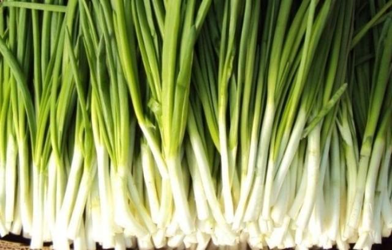

Dalam 100 g bawang hijau berisi 19-20 kg. Bulu Juicy terdiri dari 93% air, mereka berisi 1,2 g dari serat diet, 3.2 g dari karbohidrat, 1.3 g protein, 0.1 g lemak. Orang rata-rata membangun dengan aktivitas fisik moderat per hari akan dapat makan 50 g bulu. Dalam hal ini, tubuhnya akan menerima 0.8% protein, 0.1% dari lemak, 0.75% dari karbohidrat, 3% dari serat diet dari normal yang diperlukan.
